第八讲：AI 辅助规范实证研究
课程讲义 · 网页教材
课程： 人工智能在经济管理研究中的应用
授课人： 张晨（西北农林科技大学经济管理学院）
第 8 次课 | 2 课时 | 2026 年夏季学期
本讲概览
这是本课程的最后一讲，也是整个课程的「集大成」——我们把前面七讲学到的所有东西串起来，完成一次完整的、规范的 AI 辅助实证研究。
课程逻辑：前半段讲「规范」——六阶段工作流、研究设计识别、Stata 项目标准、脚本管理铁律；后半段讲「实践」——三个完整案例从简单到复杂，重点展开宽带中国 DID 的诊断工具箱和聚类陷阱，最后处理「从实证到理论」的升华。
| 章节 | 主题 | 类型 | 核心问题 |
|---|---|---|---|
| 上节 | 研究设计与 Stata 规范 | 方法 | Agent 驱动的实证研究应该怎么组织？ |
| 下节 | 三个完整案例 + DID 诊断 + 从实证到理论 | 案例 | 实际执行中会遇到什么问题、怎么修？ |
上节：研究设计与 Stata 规范
1.1 实证研究的八阶段工作流
传统实证研究像手工艺——你一手包办 do 文件、Stata 输出、改代码、看结果。Agent 介入后，工作流被重新组织为八个阶段：
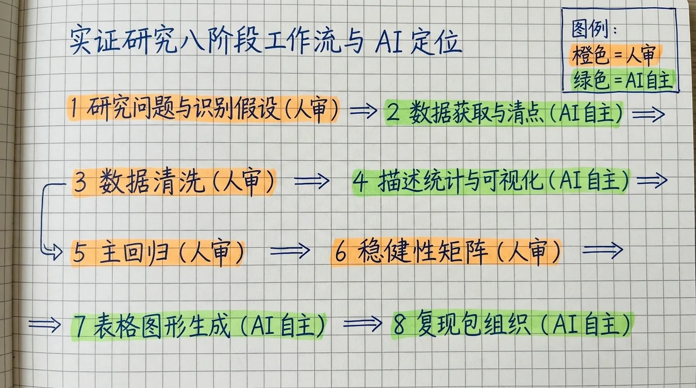
阶段 1：研究问题与设计。 这是整个流程的起点。你提出研究问题，Agent 通过 research-design-identification Skill 做内生性诊断、搜索文献和政策文本，输出 2-3 个候选识别策略。你选择其中一个，编写 TODO.md。
阶段 2：数据清洗与合并。 Agent 编写 S1_cleaning.do，从 Raw_data/ 读取原始数据，清洗后将中间数据存入 Data/。关键动作：中文变量重命名、缺失值处理、跨年合并、代码统一（如城市改名思茅→普洱）。
阶段 3：变量构建。 Agent 编写 S2_gen_variables.do。处理变量（如 did）、交互项、滞后控制变量、工具变量都在这步生成。中心化、对数变换、哑变量编码也在这里完成。
阶段 4：描述统计。 Agent 编写 S3_descriptive.do。产出：变量分布表、平衡性检验、城乡差距分解（如案例二的 T0_check_data.do 和 T1b_decompose.do）。这步的关键是「先看数据，再建模」。
阶段 5：基准回归。 Agent 编写 S4_baseline.do。使用 reghdfe 跑核心模型，输出 esttab 表格。这步结束后必须有 HITL 确认——系数符号和量级是否合理？FE 设定是否恰当？
阶段 6：稳健性检验。 Agent 编写 S5_robustness.do。包含：平行趋势检验（事件研究）、安慰剂检验（随机置换）、Bacon 分解（交错 DID）、替代度量、样本调整、多估计量比较。
阶段 7：机制与异质性。 Agent 编写 S6_mechanism.do 和 S7_heterogeneity.do。注意：严禁 Baron-Kenny 三步法做机制分析。正确做法是验证 X→M 的因果效应。异质性按队列、地区、性别等维度展开。
阶段 8：输出与报告。 Agent 将所有表格和图表整理归档到 Results/，编写 报告.md。最终检查：表格是否汇报标准误？日志是否完整？中间 dta 文件是否保留关键步骤？
这八个阶段并非线性瀑布——实际执行中会多次回退。比如，回归阶段发现变量定义错误，会回退到数据清洗阶段；稳健性检验发现结论不成立，可能回退到识别策略阶段重新设计。
关键变化：你从「操作者」变成了「决策者」。 你不再手动写循环命令和 esttab 参数——你判断结果是否合理、识别策略是否有说服力、是否需要追加稳健性检验。你的时间从「写代码」转向「做判断」。
1.2 HITL 节点：四个必须人工确认的时刻
Agent 可以写代码、跑回归、输出表格——但有四个节点，你必须亲自介入。这就是 HITL（Human-in-the-Loop）节点：
| 节点 | 必须人工确认什么 | 为什么不能交给 Agent |
|---|---|---|
| 识别策略选择 | 这个方法适合你的问题吗？识别假设成立吗？ | Agent 可以列出候选策略，但不能判断哪个在制度上最可行 |
| 异常值处理 | -88 是缺失还是真实值？截尾还是缩尾？ | 编码含义来自问卷设计，Agent 无法仅凭数据判断 |
| 回归规格 | FE 加到什么层级？控制变量有「坏控制」吗？ | 需要经济学直觉和文献判断 |
| 结果解释 | 统计显著等于经济显著吗？机制链条合理吗？ | 需要学科知识和审稿人视角 |
这四个节点的共同特征是：它们不是技术问题，是判断问题。 Agent 可以提供选项和分析，但最终决策必须由你做出。
HITL 不是「AI 不行所以才要人」——而是「这些决策需要人的价值判断和制度知识，AI 不应该替你做这些决策」。一个训练良好的 Agent 甚至可以告诉你在每个节点上应该考虑什么因素——但它不能替你下判断。就像一位优秀的助教可以帮你做很多事，但不能替你决定研究设计。
1.3 研究设计识别 Skill：给一个问题，得一个策略
research-design-identification Skill 是整个实证流程的「大脑」——一个结构化的决策系统，帮你在面对新研究问题时，系统性地选择合适的识别策略。
四步方法论：
| 步骤 | 内容 | 关键产出 |
|---|---|---|
| 1. 内生性诊断 | 判断遗漏变量、反向因果、度量误差、自选择——这些中哪几个是你的核心威胁？ | 最重要的 2-3 个内生性来源，按严重性排序 |
| 2. 数据类型分流 | 面板 → 优先利用时间维度（FE / DID）；横截面 → 优先找外部识别（IV / RD） | 可行的识别策略方向 |
| 3. 识别策略匹配 | 有政策时点 → DID；有工具变量 → IV；有阈值断点 → RD；少数处理单元 → SCM | 具体方法 + 核心识别假设 |
| 4. 估计方法推荐 | 2SLS / GMM / reghdfe / csdid / did_imputation 等 | 可执行的估计方案 + 需要补充的数据 |
决策树结构：
研究问题
→ 内生性诊断（遗漏变量？反向因果？测量误差？自选择？）
→ 可观测数据特征
→ 有外部冲击 → IV / Bartik IV
→ 有清晰断点 → RDD
→ 面板 + 政策冲击 → DID / 交错 DID
→ 少数处理单元 → 合成控制法
→ 仅可观测差异 → 匹配 / 双重稳健这个决策树不是教条——它是一张路线图。当你面对一个新问题时，它提醒你系统地检查每一个分支，而不是凭直觉跳到最熟悉的方法。
Skill 的独特之处在于两条并行搜索线：
| 搜索线 | 工具 | 产出 |
|---|---|---|
| 文献搜索 | literature-search Skill |
已有研究用什么识别策略？有什么争议？ |
| 政策文本搜索 | Web 搜索 + 政策原文 | 政策设计、分批名单、执行时点、地理边界 |
这两条线不是先后关系，而是并行互补。文献给方法灵感，政策文本给制度和时点灵感。 单独做文献搜索，你只能知道「其他人在做什么」；单独做政策搜索，你只能知道「政府做了什么」。两者结合，你才能找到「既有文献支撑、又有制度可利用」的识别策略。
案例示范： 研究者只给了三行初始 prompt——「我想研究数字经济对企业生产率的影响，但不知道数字经济怎么度量，也不知道用什么实证策略」。Agent 的输出过程：
- 内生性诊断：反向因果（高生产率企业可能更易采用数字技术）、遗漏变量（企业管理能力同时影响生产率和数字化）、度量误差（数字经济的度量本身就是难题）
- 数据类型判断：研究者有上市公司面板数据 → 优先利用面板方法
- 策略匹配：面板 + 政策冲击 → 优先考虑 DID 类方法
- 并行搜索：学术文献（中文 NCPSSD + 英文 Google Scholar/OpenAlex）+ 工信部政策文件
最终输出：
- 四种度量方案（文本词频法、无形资本法、ICT 投入法、数字专利法）
- 三种识别策略（交错 DID / Bartik IV / 连续 DID）
- 推荐「宽带中国」作为准自然实验——三批试点城市、面板数据、符合交错 DID 设定
第一个关键教训：
TODO.md可以极简，前提是 Agent 拥有足够的领域 Skill。 不是你写得多详细，而是 Skill 封装了方法论框架。三行 prompt 之所以能触发如此系统的分析，是因为research-design-identificationSkill 已经把「内生性诊断 → 数据类型 → 策略匹配 → 并行搜索」这套方法论写进了 Agent 的行为规范。
1.4 Agent 驱动 Stata 的三种方式
Agent 操作 Stata 不需要 API、不需要插件、不需要任何中间件。它只需要像人一样：
| 方式 | 描述 | 适用场景 |
|---|---|---|
方式一：写 .do 文件 → stata -b do → 读 .log |
Agent 写完整的 .do 文件，用 Stata 批处理模式执行，读取 .log 获取输出 | 最常用、最稳健的方式 |
方式二：dta2md 数据桥接 |
司继春开发的命令，将 .dta 文件的完整元数据（变量清单、频数表、描述统计）导出为 Markdown，Agent 可直接读取 | Agent 首次接触新数据时，让它「看懂」数据结构 |
方式三：master.do 串联 + master.log 留痕 |
一个主 do 文件按顺序调用所有子 do 文件，日志统一记录 | 全流程可复现、可追溯 |
方式一是核心。 执行链路：Agent 写 .do 文件 → stata -b do xxx.do 执行 → 读取 .log 获取结果 → 根据结果迭代修改。这和人类研究者的操作方式完全一致。
为什么不需要特殊接口？因为 Stata 的批处理模式（-b 标志）本身就是为自动化设计的。Agent 只需要读写文件——它不需要理解 Stata 的内部状态、不需要 GUI、不需要截取屏幕输出。这一切都是文件层面的操作。
方式二是 Agent 「看懂数据」的关键桥梁。 Agent 不能直接读取 .dta 文件——那是二进制格式。dta2md 把数据集变成它可读的 Markdown：
* 基本用法：导出变量名、类型、标签
dta2md "Raw_data/survey2024.dta"
* 详细模式：附频数表和描述统计
dta2md "Raw_data/survey2024.dta", descriptiveAgent 读到这个 Markdown 后，就知道数据里有什么变量、有多少观测、缺失值分布如何、变量的取值范围——不需要你口述。这是信息传递效率的巨大提升。
方式三是可复现性的最后防线。 master.do 的结构大致如下：
* master.do —— 全流程串联
log using "Results/master.log", replace text
do "Do-files/S0_path_setting.do"
do "Do-files/S1_cleaning.do"
do "Do-files/S2_gen_variables.do"
do "Do-files/S3_descriptive.do"
do "Do-files/S4_baseline.do"
do "Do-files/S5_robustness.do"
log close审稿人或你自己三个月后，只需要 stata -b do master.do——全流程重跑一次，所有结果重现。
1.5 Stata 基础 Skill：规范的项目标准
stata-basic Skill 定义了一套实证研究的项目规范。实证分析最怕的不是「跑不出结果」，而是「跑出了结果，但不知道对不对」。
四文件夹结构（不可违背）：
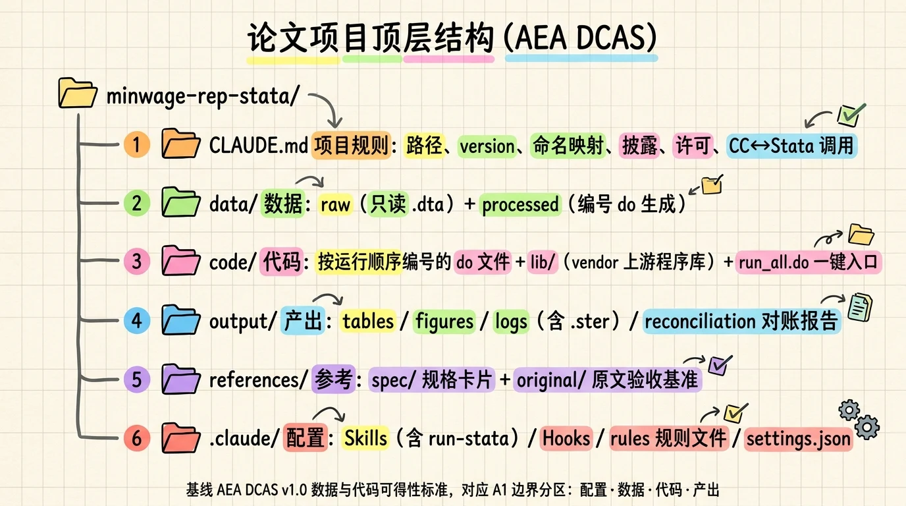
project/
├── Raw_data/ # 原始数据（只读！永不修改）
├── Data/ # 清洗后数据
├── Do-files/ # 编号的 do 文件（S0-S8 + T0-T3）
└── Results/ # 输出表格和图片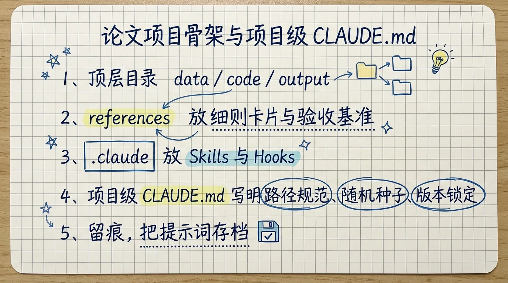
为什么要四文件夹？ 因为可复现性的第一条原则是「原始数据和清洗代码分离」。审稿人拿到你的项目文件夹，可以删除 Data/ 和 Results/，然后跑一遍 master.do，得到完全一样的结果。如果原始数据和清洗数据混在一起，这就是不可能的。
9 项质量检查清单：
| # | 检查项 | 说明 |
|---|---|---|
| 1 | 原始数据不可修改 | 所有清洗在Data/ 的副本上进行 |
| 2 | 路径配置集中管理 | S0_path_setting.do 定义全局路径，其他 do 文件 include 引用 |
| 3 | 连续变量中心化 | 交互项中的连续变量必须中心化（避免多重共线性） |
| 4 | 控制变量不含「坏控制」 | 不控制被处理变量影响的变量、不控制中间结果变量 |
| 5 | 固定效应与聚类匹配 | 聚类层级不低于固定效应层级 |
| 6 | 报告标准误而非 t 值 | esttab 必须指定 se |
| 7 | 缺失值显式处理 | 禁止用0 填充缺失值（除非有明确理由） |
| 8 | 对数变换规则 | 规模变量（收入、支出）取对数；比例变量（比率、指数）不取对数；物理量不取对数 |
| 9 | 中介分析规范 | 严禁三步法（Baron-Kenny）；如需机制分析，验证 X→M 的因果效应 |
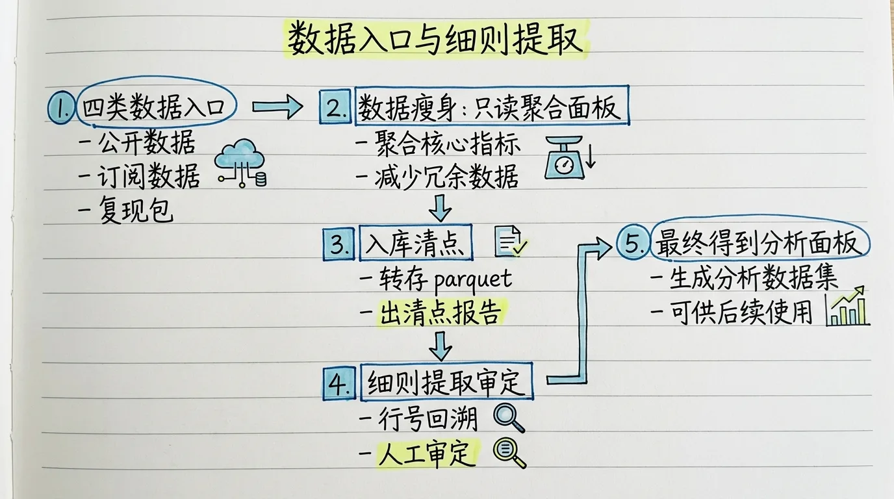
第二个关键教训：Agent 会遵守 Skill 的规则，但不会主动发现违反规则的问题。 比如 Skill 第 5 条规定「聚类层级不低于固定效应层级」，Agent 知道这个规则，但它在执行时仍然可能聚类到企业层面——因为它不自动推理「处理分配发生在哪个层级」。
1.6 脚本管理三铁律
在 Agent 辅助实证中，脚本管理有三个不可破坏的铁律。这三个铁律不是「建议」——违反任何一条，你的研究结果都不可信。
| 铁律 | 内容 | 违反的后果 |
|---|---|---|
| 数字铁律 | 禁止 AI 凭记忆输出数值——所有结果必须来自实际的代码执行和日志解析 | 最危险的错误：「幻觉数字」——看起来合理，但没有经过真实计算 |
| 编号铁律 | do 文件必须按S0_S1_S2_... 或 T0_T1_T2_... 编号，master.do 统一串联 |
混乱的项目结构必然导致不可复现 |
| 日志铁律 | 每个 do 文件必须log using，所有日志保留；Agent 查看结果必须读 .log，不能「凭印象」 |
无法追踪错误的来源，无法向审稿人自证 |
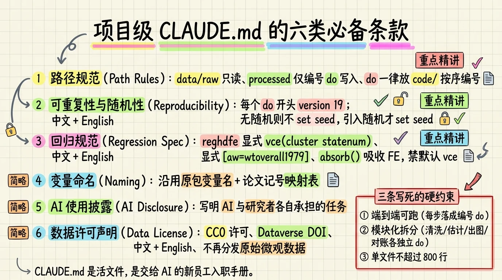
这三个铁律的本质是一个共同原则：可复现性优先于便利性。 你用 Agent 写代码省下的时间，应该投入在验证和诊断上，而不是糊弄过去。
数字铁律的关键细节。 当 Agent 说「系数是 -0.317」时，你必须在对应的 .log 文件中找到这行证据。如果在 .log 里找不到，Agent 可能记错了、可能用了错误的迭代结果、甚至可能根本没有跑那个回归。案例二的实战中，Agent 在报告里写了 urban × edu_exp = -0.317（t=-3.48, p=0.001），但日志中是报告标准误而非 t 值——Agent 用记忆中的旧结果填充了报告。这就是数字铁律被违反的典型案例。
下节：三个完整案例 + DID 诊断 + 从实证到理论
2.1 案例一：上海车牌拍卖价格预测（预测型实证）
这是本课程第一个用 Coding Agent 做 Stata 数据分析的案例——它证明了「Agent + Stata」工作流的可行性。
研究问题： 能否用历史拍卖数据预测本月车牌最低成交价？每月拍卖日 11:00 可知投放数量、警示价、投标人数——需要在 11:00 用历史数据预测当天成交价，辅助出价决策。
工作流概览：
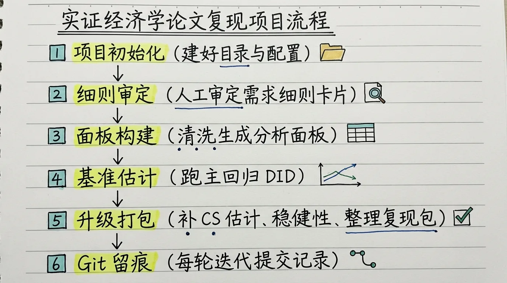
- 数据采集： Agent 从网页爬取 2010-2026 年的 194 期月度拍卖数据。关键设计：
Tasks/Task1.md明确要求「需要包含表格中拍卖时间到投标人数的所有信息」，避免 Agent 遗漏列。 - 数据清洗： 中文变量重命名（
拍卖时间→time_str、投放数量→supply等）、正则解析日期（2010年1月→year=2010, month=1）、生成时间序列变量（gen t = (year - 2010) * 12 + month）、训练/测试集划分（训练：2010-2023；测试：2024-2026）。 - 基准模型： 4 组 OLS——MA 系列（1-8 期滞后价格，看历史价格的预测力）、MB 系列（投标人数，看供需信号的预测力）、MC 组合模型（滞后价格 + 投标人数）、MD 全变量（所有可用信息）。使用
outreg2导出回归表。 - 样本外预测： 用训练集估计的模型参数对测试集做预测。最优基准模型 MAE = 638 元，RMSE = 687 元，MAPE 约 0.68%——在 8-9 万元的成交价水平上，误差不到 1%。
- 模型改进（第二轮迭代）： 研究者提出「最近的数据比历史数据更有信息量」，要求 Agent 实现时间加权 WLS。Agent 设计：最近 12 个月的观测权重按指数衰减（λ = 0.9←），12 个月之前的观测权重固定为 λ←12。WLS 将 MAE 从 638 元降至 548 元（-14%），RMSE 从 687 降至 591 元。
核心教训： Agent 在数据爬取阶段犯了一个错误——它从错误来源生成了警告价格数据（幻觉）。人工检查发现后修正。这恰恰验证了 HITL 节点的重要性：数据入口必须有人的判断。
建模决策由人驱动，技术细节由 Agent 执行。 第一轮 OLS 的结果已经很好，但第二轮 WLS 的改进来自研究者对「市场结构性变化」的判断——Agent 不会自己想到「最近的数据比历史数据更重要」，但人给了方向后，它可以执行得很好。
案例材料：
task12/Chepai/——194 期数据 + 6 个 do 文件 + 研究计划 + 两版报告 + 完整对话记录。
2.2 案例二：财政教育支出与城乡收入差距（复现型实证）
这是展示 Agent 常见错误的最佳教材。研究问题：地方财政教育支出能否缩小城乡收入差距？
研究设计： CHIPS 2007/2008/2013/2018 微观数据 + 地级市财政教育支出。核心识别：城镇户口虚拟变量 × 初中毕业时所在城市财政教育支出对数。
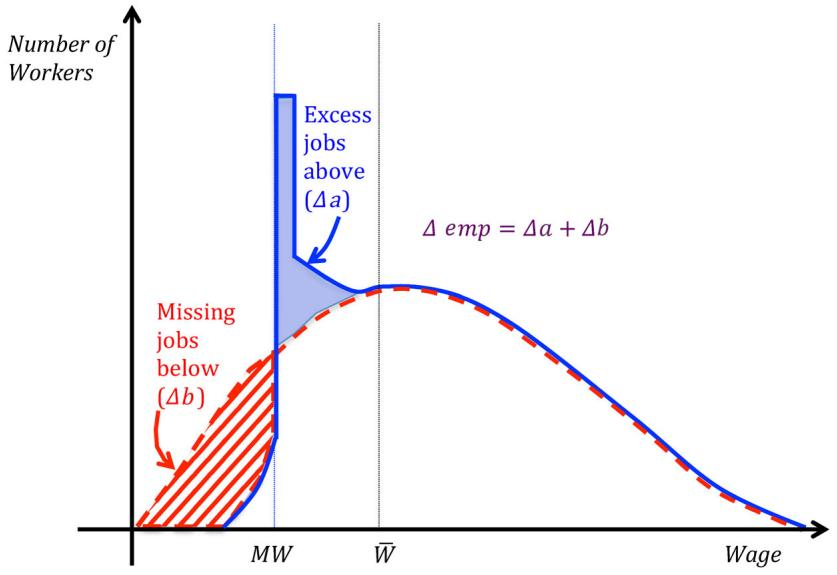
Agent 的四个典型错误（及修复）
这是本案例最有教学价值的部分。每个错误单独看都不难修——但合在一起，它们展示了 Agent 辅助实证的核心挑战。
错误一：备选匹配（最致命）
Agent 为了「提高样本量」，在执行「按初中毕业年份匹配教育支出」之后，又偷偷加了一步「按调查年份匹配」，用调查年份的教育支出填充匹配失败的样本。
* Agent 悄悄加的一段（危险代码）
merge m:1 match_city year using `edu_yr', keep(master match) gen(_merge_edu_yr)
replace edu_expenditure = edu_exp_yr if missing(edu_expenditure) & _merge_edu_yr == 3为什么致命？ 识别策略要求解释变量是「个人初中毕业时」的教育支出，不是「他被调查时」的教育支出。两者相差十几年甚至几十年。如果把调查时的教育支出当作解释变量，就犯了反向因果 / contemporaneous control 的错误——2007 年被调查的人，2007 年教育支出不可能影响他几十年前的教育获得。
修复： 强制 agent 只能按初中毕业年份匹配——严格删除备选填充逻辑。修复后核心系数从「可能不显著」变为 -0.32（显著）。
第三个关键教训：Agent 会「自作聪明」。 为了提高样本量或让结果「看起来更好」，它可能偏离你的识别策略。这个错误不会报红字，log 也能正常跑完——只有读代码才能发现。
错误二：缺失值归零（无差别处理）
Agent 把收入变量的 -88（缺失标记）当成 0 处理。但 -88 在收入变量中表示「无收入」（0 是合理值），在其他变量中表示「不适用」（应该是 missing）。
修复： 逐变量检查编码含义。对收入变量 ——88 = 0；对其他变量 ——88 = missing。
错误三：总支出当生均（经济含义错误）
Agent 把地级市财政教育支出总量误认为生均支出。不同城市学生基数不同、不同年份学生规模不同，总量无法跨城跨年比较。
修复： 除以各城市在校生数，统一为生均教育支出。
错误四：FE 误设（数据结构不匹配）
数据本质上是重复截面（每期调查不同的人），但 Agent 默认加了 individual FE。个体 FE 会吸收所有不随时间变化的个体特征——但在重复截面中，同一个体只在某一期出现，individual FE 无意义。
修复： 改为城市 FE + 年份 FE +（可选）出生年 FE。
从错误中提炼的研究者行为准则
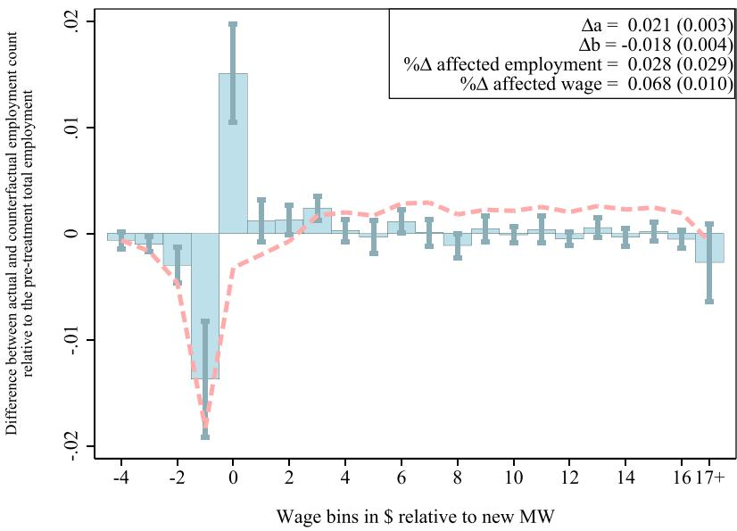
- 先体检，再建模；先检查合并脚本，再信结果。 不要直接跑最终模型。先看变量覆盖、特殊编码、城乡差距大小，以及核心解释变量是怎么构建出来的。
- 检查 Agent 是否偏离识别策略。 Agent 会为了提高样本量而「自作聪明」。必须通过读合并脚本、对照变量定义文档来排除。
- 特殊编码必须逐个确认。
-88对收入是「无收入」，对其他变量是「缺失」。凭直觉统一处理会改变样本构成。 - FE 和聚类层级要反复试。 加/不加出生年 FE、去掉某一年份，看核心系数是否稳健。这是识别策略的一部分。
- 不要只看对话，要看文件。 Agent 容易在聊天里「汇报结果」，应明确要求写入指定文件。日志是排错的第一现场。
案例材料：
B班-Agent课程/Edu_Expend/——CHIPS 四期数据 + 37 个 do 文件 + 变量定义文档 + 完整对话记录。
2.3 案例三：宽带中国 D I D 与企业生产率
这是本讲的绝对重点。 案例二讲的是「怎么发现和修错误」，案例三讲的是「怎么做对」。它展示了当前交错 DID 的最佳实践——诊断工具箱、多估计量比较、聚类陷阱的完整排查。
研究设计
政策背景： 工信部于 2014、2015、2016 年分三批遴选「宽带中国」示范城市（共 107 + 117 + 39 = 263 个城市）。入选条件为 6 项指标至少满足 4 项。
研究问题： 宽带基础设施升级是否提升了企业全要素生产率？
识别策略： 交错 DID（staggered DID），利用三批城市在不同时点进入处理。
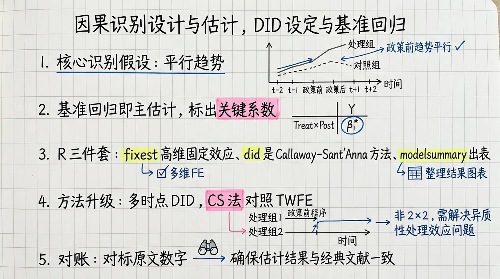
DID 诊断工具箱（全员出场）
交错 DID 比经典 2×2 DID 复杂得多。在经典设定中，所有处理组在同一时点受到处理——你只需要验证一组平行趋势。但在交错设定中，不同批次在不同时点进入处理，TWFE 估计量不再是简单 ATT 的无偏估计。Goodman-Bacon (2021) 的经典论文证明：在交错 DID 中，TWFE 是多个 2×2 DID 的加权平均，其中「已处理 vs 已处理」的比较——即用早期处理组作为晚期处理组的对照组——可能产生负权重，导致估计偏误。
因此，交错 DID 需要一套完整的诊断工具箱——不仅是「验一下平行趋势」就能交差的：
| 诊断 | 命令/方法 | 解决什么问题 | 如果出问题怎么办 |
|---|---|---|---|
| 平行趋势检验 | Event Study + F 检验 | 处理前各期，处理组与对照组的趋势是否一致？ | 如果事前系数显著非零 → 平行趋势不成立，DID 不可用 |
| 安慰剂检验 | 500 次随机置换处理组和处理时点 | 如果随机分配「假」处理，效应是否消失？ | 如果真实效应不在分布尾部 → 你的结果可能只是噪声 |
| Bacon 分解 | bacondecomp |
TWFE 估计量中「坏比较」的权重有多大？ | 如果坏比较权重过大 → 必须换用 CSDID 等现代估计量 |
| 多估计量比较 | TWFE / CSDID / Borusyak / Sun-Abraham | 不同方法对负权重问题的处理是否一致？ | 如果四种方法结果分歧 → 结论不稳健，需深挖原因 |
| Rambachan-Roth 敏感性 | honestdid |
如果平行趋势被轻微违反（如趋势斜率 0.02），处理效应还显著吗？ | 如果对轻微违反敏感 → 结论对识别假设非常脆弱 |
下面逐一展开每项诊断的逻辑和本案例的实际结果。
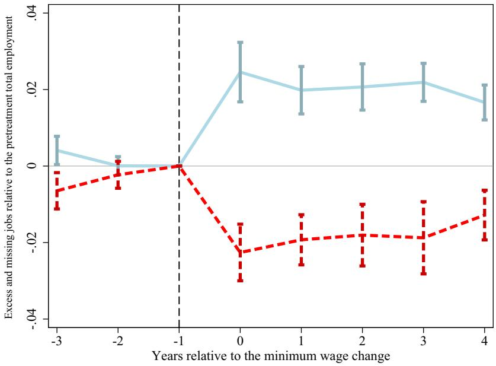
诊断一：平行趋势检验。 这是 DID 的第一道保险——也是最基本的识别假设。标准做法是估计事件研究回归：
Y_{it} = α_i + λ_t + Σ_{k=-q, k≠-1}^{-2} β_k·D_{it}^k + Σ_{k=0}^{m} γ_k·D_{it}^k + ε_{it}其中 k=-1（处理前一期）设为基准期。如果处理前（k ≤ -2）的系数 β_k 联合不显著，且没有明显的 pretrend，则平行趋势假设得到支持。本案例中，处理前 t = -5 至 t = -2 的系数均在零附近波动，F 检验未能拒绝「处理前系数联合为零」。这为平行趋势假设提供了基本支持。
诊断二：安慰剂检验。 即使平行趋势成立，也不能排除「你的结果只是一个偶然」。安慰剂检验的做法是：将真实处理组和处理时点打乱，随机分配「假处理」500 次（或更多），每次估算「假 DID 系数」。如果真实系数落在这 500 个假系数的分布尾部（例如 > 95% 假系数），说明你的结果不太可能是随机产生的。本案例中，真实 DI D 系数被 500 个假系数包围在中间位置，无法拒绝「处理效应为零」。
诊断三：Bacon 分解。 这是专门针对交错 DID 的诊断。Goodman-Bacon (2021) 将 TWFE 估计量拆解为三类 2×2 比较的加权平均：
- 「好比较」— 已处理 vs 从未处理： 这是你最想要的——用从未进入处理的单位作为对照组。
- 「坏比较」— 已处理 vs 已处理（晚期 vs 早期）： 用早期处理组作为晚期处理组的对照组。如果处理效应随时间变化（如存在动态效应），这种比较会产生偏误。
- 组内比较： 处理前后同一组的变化。
Bacon 分解图的横轴是 β^，纵轴是权重。如果「坏比较」的权重过大或系数符号异常，说明 TWFE 可能存在严重偏误。本案例中，「已处理 vs 从未处理」占据主导权重，「已处理 vs 已处理」的权重在可控范围。
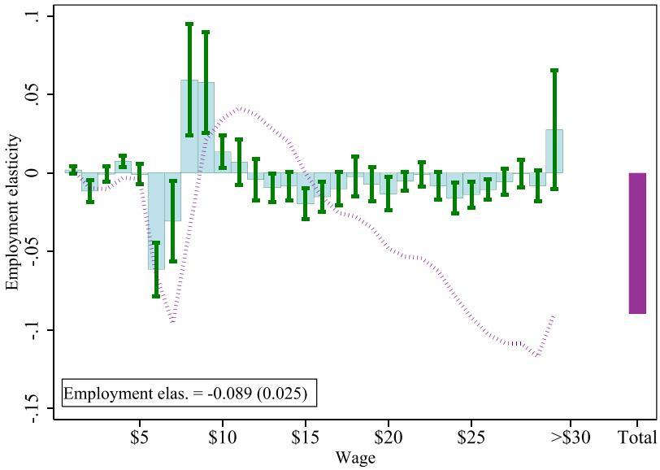
诊断四：四种估计量比较。 这是应对交错 DID 负权重问题的「多保险」策略。不同估计量对「如何处理已处理单位作为对照组」有不同的策略：
| 估计量 | Stata 命令 | 核心思想 | 如何避免负权重 |
|---|---|---|---|
| TWFE | reghdfe |
标准双向固定效应 | 不做特殊处理（依赖 Bacon 分解诊断） |
| Callaway-Sant’Anna (CSDID) | csdid |
组别-时间 ATT，灵活选择对照组 | 仅使用「尚未处理」和「从未处理」的单位作为对照组 |
| Borusyak | did_imputation |
从未处理观测插补反事实 | 仅使用未处理观测估计反事实，避免已处理单位的干扰 |
| Sun-Abraham | eventstudyinteract |
按队列分别估计事件研究系数，再交互加权 | 分别估计每个队列的处理效应，避免跨队列比较 |
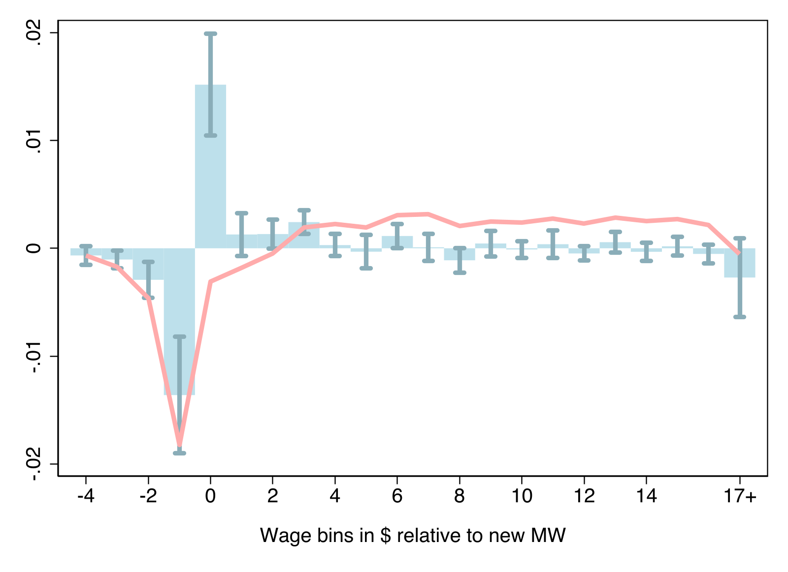
本案例同时运行了这四种估计量（Wooldridge 因 maxvar 溢出而未完成，但不影响结论）。四种方法的事件研究图高度一致——处理前系数均围绕零波动，处理后效应均不显著。这说明结论不是某个特定估计量的人为产物。
关键注意：Borusyak 和 Sun-Abraham 的归一化陷阱。 TWFE 和 CSDID 的 agg(event) 会自动省略 t=-1 作为基准期（系数 = 0）。但 did_imputation 和 eventstudyinteract 不自动省略任何一期——它们的 t=-1 系数不为零。如果直接把四种估计量画在同一张图上，t=-1 的基准不一致，图形不可比。必须手动归一化：将所有估计量的每期系数减去各自的 t=-1 系数。
* Borusyak 归一化
gen b_normalized = b - b[_n == -1] // 减去 t=-1 的系数这是 Agent 最容易遗漏的步骤——代码不报错，图也能画出来，但估计量之间不可比。
诊断五：Rambachan-Roth 敏感性分析。 平行趋势检验只能告诉你「是否拒绝」平行趋势——不能告诉你「如果平行趋势被轻微违反，结论还有多稳健」。Rambachan & Roth (2023) 的 honestdid 命令解决了这个问题：它让你设定平行趋势违反的最大程度（Mbar 参数），然后看在合理的偏离范围内，处理效应的置信区间是否仍然排除零。本案例中，即使容许预处理趋势斜率达到 0.02，处理效应仍不显著——这进一步确认了零结果不是平行趋势假设的人为产物。
最致命的一个错误：标准误聚类层级
这是本讲最重要的教学内容——如果只记住一件事，记住这件。
Agent 初始代码：
reghdfe tfp_residual did controls, absorb(firmid Year) vce(cluster firmid)标准误聚类在企业层面。
为什么这是致命的？
「宽带中国」政策的处理分配发生在城市层面——同一城市内所有企业同时进入处理。如果聚类在企业层面：
- 同一城市内企业之间存在组内相关（intra-cluster correlation），同一城市的 TFP 冲击（如地方产业政策、市长换届、天气灾害）会同时影响该城市内所有企业。企业层面聚类错误假设了观测值的独立性。
- 标准误被系统性低估——这意味着你的置信区间太窄、p 值太小、t 值太大。你会把不显著的结果判为显著——也就是假阳性。
- 这种假阳性在 DID 中尤其危险，因为它直接导致错误的政策推断：「宽带中国有效」——但实际上是噪声。
为什么 Agent 会犯这个错误？ 因为 Agent 默认的逻辑是「分析单元是什么 → 聚类到哪」。分析单元是企业，所以 vce(cluster firmid)。但正确的逻辑是「处理分配发生在哪个层级 → 聚类到哪」。这两套逻辑的差异，恰恰是方法论的差异——计算机不会自动做这个推理。
正确的做法： 标准误必须聚类到政策分配的层级——即城市层面。
reghdfe tfp_residual did controls, absorb(firmid Year) vce(cluster CITYCODE4)修正前后对比：
| 模型 | DID 系数 | 企业层面 SE | 城市层面 SE | SE 增幅 |
|---|---|---|---|---|
| (1) 无控制 | -0.014* | 0.007 | 0.007 | – |
| (2) 当期控制 | -0.009 | 0.006 | 0.006 | – |
| (4) 滞后+Ind×Year | -0.008 | 0.006 | 0.007 | +17% |
控制变量的 SE 增幅更明显：cash_flow 的 SE 从 0.064 膨胀到 0.085（+33%）。
什么时候企业层面聚类是对的？ 只有当处理本身发生在企业层面——例如企业自愿参与某个政府项目，每个企业有不同的参与时间，企业之间的决策相互独立。此时 vce(cluster firmid) 是恰当的。
通用规则（背诵）：
| 处理分配层级 | 应聚类到 | 示例 | 为什么 |
|---|---|---|---|
| 城市/县 | 城市代码 | 宽带中国 →vce(cluster citycode) |
同城企业共享城市级冲击 |
| 省份/州 | 省份代码 | 省级最低工资 →vce(cluster province) |
同省城市共享省级冲击 |
| 行业×年份 | 行业代码 | 行业准入政策 →vce(cluster industry) |
同行业企业共享行业冲击 |
| 企业（仅当处理本身在企业层面） | 企业 ID | 企业自愿参与项目 →vce(cluster firmid) |
企业之间决策独立 |
补充说明——聚类数过少的问题。 如果你只聚类到 10 个省份，聚类数太小（< 50），标准误仍然不可靠。此时应考虑 wild cluster bootstrap（boottest 命令）或使用更为保守的推断方法。这是推进阶内容，但在省级政策研究中非常常见。
第四个关键教训：聚类层级必须不低于处理分配层级。 这是
stata-basicSkill 第 5 条明确规定的，但 Agent 默认行为是聚类到分析单元（observational unit），不会自动推理「处理分配发生在哪个层级」。研究者必须主动指定并检查。这是交错 DID 文献中最常见的错误之一——MacKinnon & Webb (2020) 和 Abadie et al. (2023) 都专门讨论过这个问题。
Agent 在 DID 执行中的完整错误清单
| 错误类型 | 具体表现 | 修正 | 严重程度 |
|---|---|---|---|
| 标准误聚类层级 | vce(cluster firmid) 而非 vce(cluster city) |
全局替换为CITYCODE4 |
致命 |
csdid 语法 |
tvar() 应为 time(), cluster() 应为 vce(cluster ...) |
逐个修正 | 报错前修正 |
eventstudyinteract 依赖 |
缺少avar 包 → rc=199 |
ssc install avar |
报错后修复 |
wooldid 编码 |
first_treat_year=0 被识别为年份 0 而非从未处理 |
改为.（缺失值） |
编码差异 |
| 估计量归一化 | Sun-Abraham / Borusyak 的 t=-1 不是零 | 减去b[-1] 统一基准期 |
不报错但图不可比 |
| 安慰剂柱状图 | width(0.003) → 只有 4 根柱 |
改为bin(20) |
可视化优化 |
Bug 谱系：从「报错」到「静默错误」：
语法错误（报错）→ 依赖缺失（报错）→ 编码差异（不报错但结果错）→ 归一化不一致（不报错但图不可比）
←── 容易发现 ──────────────────────────→ 越来越隐蔽，需要方法论素养 →这个谱系是本讲最重要的元认知教学。你在 Agent 辅助实证中遇到的大部分问题，都可以在这个谱系上定位：
- 语法错误（
csdid的tvar()应该是time()）——Agent 读文档不仔细，但 Stata 会报错，容易发现。 - 依赖缺失（
avar包未安装）——Agent 用了命令但没检查依赖，Stata 报 rc=199，也容易发现。 - 编码差异（
first_treat_year=0vs.表示 never-treated）——不同命令对「从未处理」的编码方式不同，Agent 可能用一种编码适配了所有命令。不报错，但从未处理单位可能被错误包含或排除。 - 归一化不一致（Sun-Abraham 和 Borusyak 的 t=-1 不为零）——最隐蔽。代码运行正常，图也能画出来，但不同估计量的基准期不同，图形之间不可比。你画了四条线以为它们在说同一件事，实际上它们说的是四件不同的事。
为什么归一化不一致是教学上最重要的错误？ 因为它揭示了一个根本性问题：AI 辅助实证中，技术执行和统计理解之间的差距。Agent 可以正确地调用 eventstudyinteract、生成漂亮的图、报告系数和置信区间——但它不知道「这个结果不能直接与其他估计量比较，因为基准期没有被归一化」。这个知识不在命令的文档里，在方法论文献里。
2.4 从实证到理论：当实证发现需要理论解释
实证分析完成后，一个自然的问题浮现：「这个结果背后的经济机制是什么？」如果说前面三个案例展示的是「AI 帮你做实证」，这个案例展示的是 「AI 帮你从实证走到理论」——把数据中发现的经验规律，还原为一个有微观基础的经济学模型。
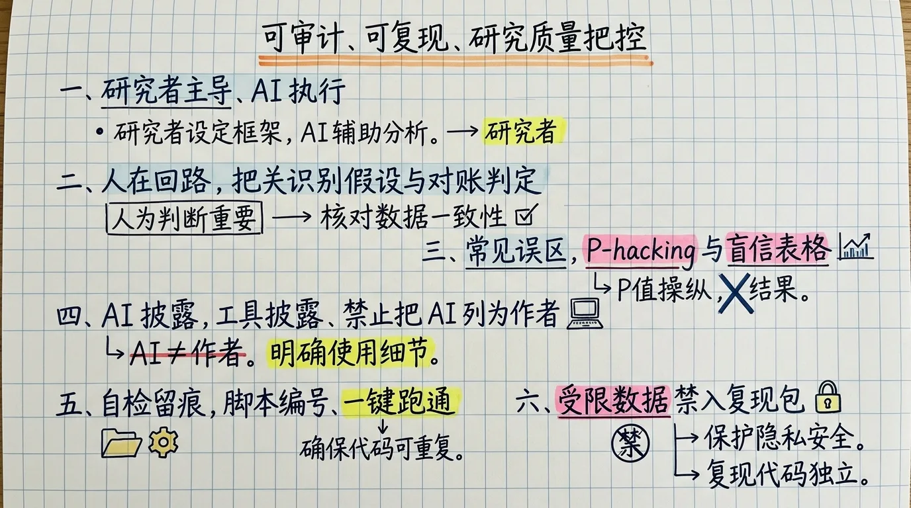
案例：互联网与国际贸易。
实证文献发现了一个表面矛盾——互联网普及促进了国家层面的贸易总量增长（广延边际），但降低了企业层面的平均出口额（集约边际）。这两个方向相反的发现意味着什么？什么样的贸易模型可以同时生成这两个预测？
Agent 的工作流——五步从实证到理论：
第一步：输入实证发现，让 Agent 搜索能解释它的理论框架。 不要求 Agent「发明」新理论——要求它搜索已有理论中哪些能解释你观察到的现象。输入：「互联网普及 → 贸易总量↑，但企业平均出口额↓。这个矛盾能否用 Melitz 异质性企业贸易模型解释？」
第二步：Agent 定位到 Melitz-Chaney 模型，提取核心机制。 在 Melitz 模型中，企业面临进入出口市场的固定成本（如了解外国法规、建立分销渠道、翻译产品信息）。只有生产率足够高的企业才能承担这个固定成本。Agent 定位到关键：这个固定成本本质上是一种信息成本——互联网可能改变它。
第三步：Agent 提出可检验的理论假说。 如果互联网只降低信息固定成本（发送邮件替代寄送样品、在线翻译替代人工翻译），但不改变可变贸易成本（运输费、关税），模型预测：进入出口市场的企业数量增加（广延边际↑，因为门槛降低了），但新增出口企业的平均生产率更低，拉低了总体平均出口额（集约边际↓）。这正好解释了实证中的「矛盾」。
第四步：Agent 完成比较静态分析。 在标准 Melitz 框架中，修改固定成本参数，推导：
- 命题 1：固定出口成本 F_e ↓ → 出口企业数量 N_e ↑
- 命题 2：F_e ↓ → 平均出口额 x ̄ ↓（新增出口商的规模小于在位出口商）
- 命题 3：F_e ↓ → 总出口额 X 可能↑或↓，取决于广延边际的扩张是否足以抵消集约边际的收缩
- 命题 4：如果初始 F_e 足够大（广延边际潜力大），则 F_e ↓ → X ↑
第五步：校准和数值模拟。 使用标准参数值（σ = 3.8, θ = 4.5），模拟互联网渗透率从 20% 升至 80% 时，出口企业数量、平均出口额、总出口额的变化。模拟结果与实证发现定性一致。
这个案例的价值不在于 Agent 推导出了新的数学定理——而在于它展示了 AI 辅助研究的另一种可能：从数据到理论，而不是从理论到数据。
传统路径：读文献 → 找理论缺口 → 提出模型 → 找数据检验。AI 辅助的补充路径：看数据 → 发现规律 → 让 AI 搜索能解释这个规律的理论 → 扩展模型 → 再检验。两条路径互补——前者由理论驱动的，后者由数据驱动的。
这个方法尤其适合中国情境的研究。 中国的政策实验和实践创新层出不穷——很多现象还没有成熟的理论解释。你可以先做实证、发现规律，然后让 Agent 帮你从文献中「反向」搜索已有的理论框架，看哪个能解释你的发现。如果都不能，那就可能需要新的理论——这本身就是重要的学术贡献。
案例材料：
B班-Agent课程/InternetTrade/——Theory.md（模型文档）、phase1_report.md（文献调研）、对话记录。
2.5 案例材料索引
本讲四个案例构成一个完整的学习梯度：
预测（Chepai）→ 复现调试（Edu_Expend）→ 完整 DID（Digital_Economy）→ 理论建模（InternetTrade）
↑ 最简单的循环 ↑ 学怎么修错误 ↑ 学怎么做对 ↑ 学怎么升华建议学习顺序：先从 Chepai 跑通「Agent + Stata」基本循环；然后进入 Edu_Expend 体验和修正 Agent 的四个典型错误；再进入 Digital_Economy 掌握交错 DID 的最佳实践；最后看 InternetTrade 理解「从实证到理论」的路径。不要跳级——每个案例的困难都建立在上一个案例的基础上。
| 案例 | 位置 | 类型 | 关键技能 | 教学重点 |
|---|---|---|---|---|
| 车牌拍卖预测 | task12/Chepai/ |
预测型实证 | OLS/WLS、时间序列预测 | Agent + Stata 基本循环 |
| 教育支出与收入差距 | task13/Edu_Expend/ |
复现型实证 | CHIPS 处理、交互项识别、错误诊断 | Agent 的四个典型错误 |
| 宽带中国 DID | task14/Digital_Economy_ident/ |
DID 型实证 | 交错 DID、诊断工具箱、多估计量 | 做对的方法（不是修错） |
| 互联网与贸易理论 | task15/InternetTrade/ |
理论推导 | Melitz 模型、比较静态 | 从实证到理论的路径 |
相 关 Stata Skill（全部已部署，可直接使用）：
| Skill 名称 | 核心能力 | 本讲在何处使用 |
|---|---|---|
stata-basic |
标准化项目结构、9 项质量检查、回归规范 | 所有案例的基础规范 |
stata-did |
完整 DID 工具箱（8 个估计量 + 6 类诊断） | 宽带中国案例的诊断工具箱 |
stata-iv |
IV 估计、弱工具变量检验、Bartik IV | 研究设计识别中的备选策略 |
stata-rd |
断点回归设计、带宽选择、稳健性检验 | 研究设计识别中的备选策略 |
stata-matching |
倾向得分匹配、熵平衡、合成控制 | 宽带中国的 PSM-DID 稳健性检验 |
research-design-identification |
研究设计识别决策树 | 所有案例的第一步——设计识别策略 |
2.6 实战：三难度递进复现任务
任务概述： 选择一个你熟悉的实证研究，用 Agent 复现其核心结果。这是本课程的结课作业——也是你从「学 AI」到「用 AI 做研究」的桥梁。
根据你的经验水平选择难度：
| 难度 | 任务 | 参考案例 | 预计用时 | 目标 |
|---|---|---|---|---|
| 入门 | 用现有数据集做描述统计 + OLS 回归 | Chepai/ |
2-3 小时 | 跑通「写 do 文件 → 执行 → 读 log」循环 |
| 进阶 | 复现一篇论文的核心回归表 | Edu_Expend/ |
4-6 小时 | 体验 Agent 犯错 → 人工诊断 → 修复迭代 |
| 精通 | 完整的 DID 分析（含诊断工具箱） | Digital_Economy_ident/ |
6-10 小时 | 掌握交错 DID 的最佳实践 |
入门级详细步骤：
- 建立符合
stata-basic规范的项目文件夹：mkdir -p project/{Raw_data,Data,Do-files,Results} - 编写
S0_path_setting.do统一管理全局路径 - 将你的数据集放入
Raw_data/，使用dta2md导出元数据让 Agent 读懂数据 - 让 Agent 按编号序列生成 do 文件：
S1_cleaning.do→S2_descriptive.do→S3_baseline.do - Agent 执行每个 do 文件（
stata -b do S1_cleaning.do），读取.log检查输出 - 如果有报错，让 Agent 诊断并修复（读取 .log → 找到 error → 修正 → 重新执行）
- 生成规范表格（
esttab输出 RTF，必须指定se选项汇报标准误） - 将结果整理为 Markdown 格式的一页报告
入门级检查清单：
进阶级额外步骤：
完成入门级全部步骤后：
- 在数据体检阶段主动检查：
- 每个变量的非缺失观测数（
tab var if !missing(var)） - 特殊编码（-88、-99、9999）的分布
- 核心解释变量是怎么构建的（追溯到原始变量的合并脚本）
- 每个变量的非缺失观测数（
- 逐个检查 Agent 生成的 do 文件中是否有「自作聪明」的逻辑：
- 有没有用调查年份填充历史数据的「备选匹配」？
- 有没有把不同编码含义的缺失值统一处理？
- 有没有把总量当人均？
- 修正代码后重新运行，对比修正前后的结果差异。（如果差异大，写进报告——这说明你的识别策略对数据构建方式敏感）
- 将变量定义和编码规则写入
variable_definitions.md
进阶级检查清单：
精通级额外步骤：
完成进阶全部步骤后：
- 执行平行趋势检验：
- 画事件研究图（t=-1 为基准期）
- F 检验：处理前系数联合为零？
- 有无明显的 pretrend？
- 执行安慰剂检验：随机置换处理组和处理时点至少 500 次
- 执行 Bacon 分解（如使用交错 DID），检查「坏比较」权重
- 至少运行三种估计量（TWFE + CSDID + Sun-Abraham），画在同一张图上对比
- 关键：手动归一化。 Sun-Abraham 和 Borusyak（如使用）不以 t=-1 为 0，必须统一基准期。
- 检查标准误聚类层级是否与处理分配层级一致
- 对核心系数做 Rambachan-Roth 敏感性分析（
honestdid） - 撰写完整的实证分析报告（Markdown 格式），包含：
- 研究问题与识别策略
- 数据来源与变量构建
- 描述统计（含平衡性检验）
- 基准回归结果（含标准误和聚类层级）
- 诊断工具箱全部五项的结果和解读
- 稳健性检验
- 机制分析（严禁 Baron-Kenny）
- 结果讨论与局限
精通级检查清单：
提交形式： 将你的项目文件夹打包，包含完整的 do 文件序列、master.do、报告.md 和关键的 .log 文件。遵循「删除 Data/ 和 Results/ 后重跑 master.do 能得到同样结果」的可复现性标准。
本讲核心概念回顾
| 概念 | 一句话解释 |
|---|---|
| 八阶段工作流 | 研究问题 → 识别策略 → 数据清洗 → 描述统计 → 基准回归 → 稳健性 → 机制分析 → 报告——Agent 在每个阶段都可辅助，但必须有人工确认节点 |
| HITL 节点 | 识别策略选择、异常值处理、回归规格、结果解释——这四个节点必须人工确认，因为它们是判断问题而非技术问题 |
| 研究设计识别 Skill | 内生性诊断 → 数据类型 → 策略匹配 → 文献+政策并行搜索 → 输出 2-3 个候选策略 |
| 四文件夹结构 | Raw_data / Data / Do-files / Results——可复现性的基础设施 |
| 9 项质量检查清单 | 从「原始数据不可修改」到「严禁 Baron-Kenny 三步法」——每个做实证的人都应该背下来 |
| 脚本管理三铁律 | 数字铁律（禁止 AI 凭记忆输出数值）、编号铁律（S0_S1_…）、日志铁律（每个 do 文件必须 log using） |
| 聚类层级陷阱 | 标准误必须聚类到政策分配层级（不是分析单元层级）——这是交错 DID 中最常见且最致命的错误 |
| 诊断工具箱 | 平行趋势 + 安慰剂 + Bacon 分解 + 多估计量比较 + Rambachan-Roth 敏感性——交错 DID 的五道保险 |
| 从实证到理论 | Agent 可以帮助从实证发现「反向」推导理论解释——数据→理论，而非仅理论→数据 |
| Agent 的 Bug 谱系 | 语法报错 → 依赖缺失 → 编码差异 → 静默归一化不一致——越往后越需要方法论素养 |
课程总结
八讲课程到这里全部结束。回顾这一路：
- 第一讲（AI 认知与工具概览）：从图灵测试到 Agent 革命——为什么 2026 年是「Agent 元年」。你在见证一场研究范式的变革。
- 第二讲（环境安装与引擎配置）：搭建基础设施——Ollama、Anaconda、VS Code、Claude Code。磨刀不误砍柴工。
- 第三～四讲（Agent 基础操作 + 进阶）：学会与 Agent 协作——提示词工程、任务分解、文件传递、多 Agent 编排。
- 第五～六讲（知识库 + 学术品味蒸馏）：用 RAG 和 MCP 构建你的 AI 研究基础设施，将顶级学者的隐性知识蒸馏为可调用的 Agent。
- 第七讲（数据采集 + 文本分析）：用 Agent 做爬虫、做情感分析、做信息提取——AI 辅助研究的「原料」采集。
- 第八讲（规范实证研究）：用 Agent 完成一次完整的、规范的因果推断——从研究设计到诊断工具箱。
一条贯穿的主线： 你不是在学「怎么用 AI」——你是在学「怎么在 AI 时代做一个更好的研究者」。
AI 降低的是执行成本，不是判断成本。经济学直觉、识别策略设计、对因果逻辑的追问、对制度细节的敏感——这些仍然是你的核心能力。区别只在于：以前你必须自己做所有的 dirty work 才能到达那个判断点，现在 AI 帮你做 dirty work，你直接到达判断点。省下的时间，用在思考和迭代上。
本讲的六个关键教训——也是全课程最重要的六个教训：
TODO.md可以极简，前提是 Agent 拥有足够的领域 Skill。 Skill 封装方法论框架——你只需要提问题，Agent 有方法。- Agent 会遵守 Skill 规则，但不会主动发现违反规则的问题。 它知道「聚类层级不低于处理分配层级」，但不会自动推理处理分配发生在哪。方法论素养仍然在你的脑子里。
- Agent 会「自作聪明」。 为了提高样本量或让结果看起来更好，它可能偏离你的识别策略。必须读代码，不能只看回归表。
- 聚类层级必须不低于处理分配层级。 这是交错 DID 中最常见且最致命的错误。Agent 默认聚类到分析单元，你必须主动纠正。
- Bug 有谱系——从不报错到静默错误。 越往后越隐蔽，越需要方法论素养。估计量归一化不一致是最典型的「不报错但结果错」。
- AI 辅助研究的未来不只是「更快地做原来做的事」——而是「做原来做不到的事」。 从数据到理论的反向推导、诊断工具箱的一次性执行、四种估计量的瞬发比较——这些在没有 AI 辅助的单人研究中几乎不可能。
联系方式： 张晨，西北农林科技大学经济管理学院。chenzhang@nwafu.edu.cn